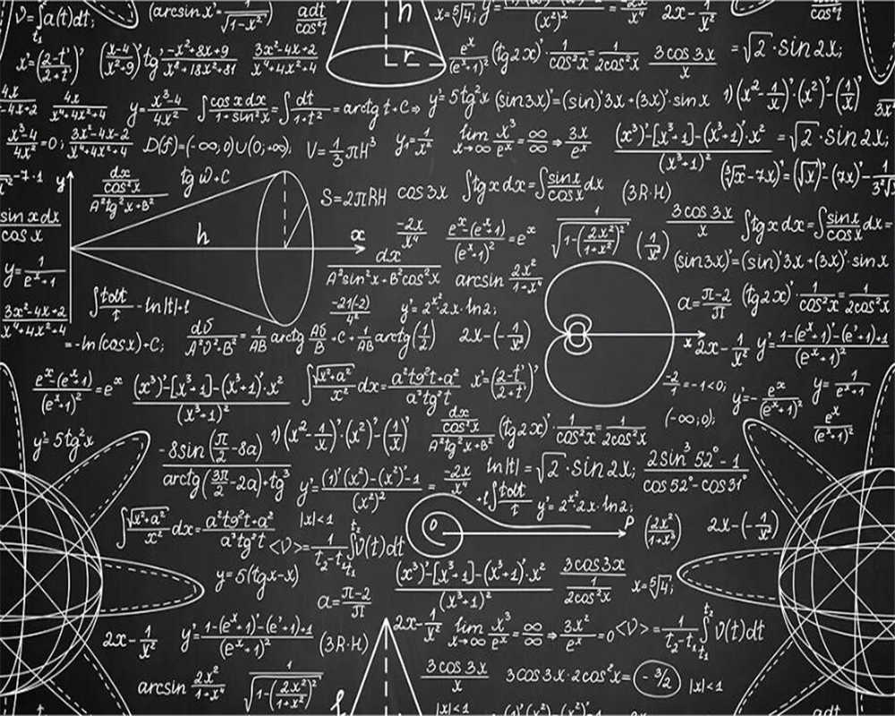

Cześć Daniel! Rozwiąż zadanko, aby przejść dalej!
Oblicz kwadrat z cotangensa kąta między stycznymi do okręgu x2 + y2 + 2x − 2y − 3 = 0, poprowadzonymi przez punkt A=(3,0), pomnożony
przez liczbę punktów, które wyrwiesz na maturce z matmy ♥.

Tu wpisz odpowiedź: